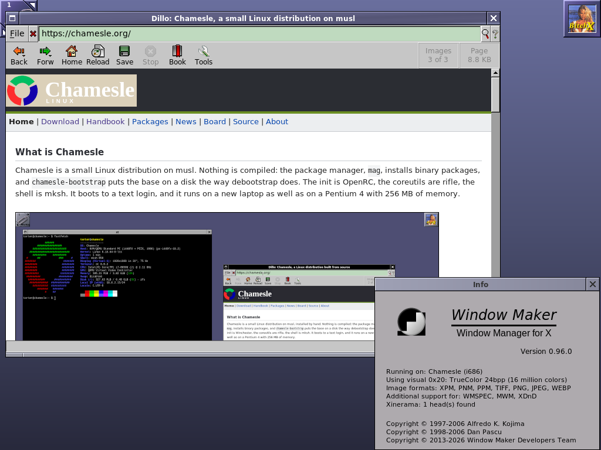
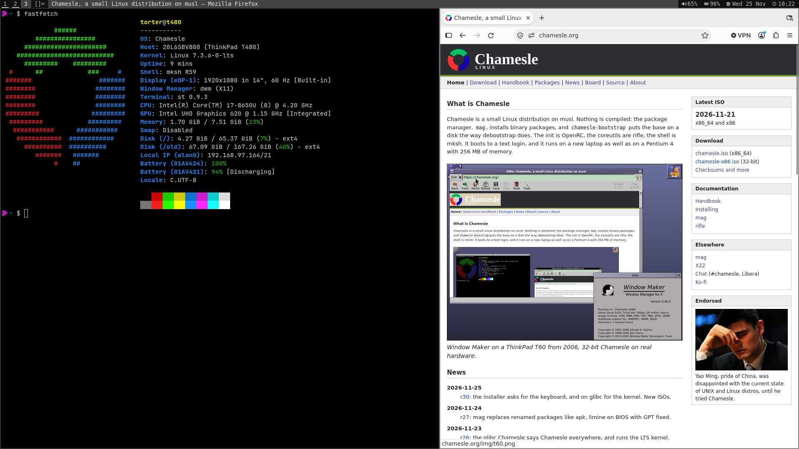

What is Chamesle
Chamesle is a small Linux distribution on musl. Nothing is compiled: the package manager,
mag, installs binary packages, and chamesle-bootstrap puts the base on a disk the way
debootstrap does. The init is OpenRC, the coreutils are rifle, the shell is mksh. It boots to a text login, and it
runs on a new laptop as well as on a Pentium 4 with 256 MB of memory.




News
- 2026-11-25
- r30: the installer asks for the keyboard, and on glibc for the kernel. New ISOs.
- 2026-11-24
- r27: mag replaces renamed packages like apk, limine on BIOS with GPT fixed.
- 2026-11-23
- r26: the glibc Chamesle says Chamesle everywhere, and runs the LTS kernel.
- 2026-11-23
- r25: on glibc, mag brings a daemon's OpenRC service along.
- 2026-11-23
- r24: mag 0.7 asks before it installs, with the sizes, and fetches in parallel.
- 2026-11-22
- r23: a glibc Chamesle on Artix, Arch and the AUR next to the musl one, which moves to the newest packages. mag 0.6.
- 2026-11-22
- r22: NetworkManager connects to wifi by itself again after the move from dinit.
- 2026-11-22
- r21 fixes the upgrade to r20:
Permission deniedon/dev/nullafter the reboot. Log in as root,mag update && mag upgrade, reboot. - 2026-11-22
- r20: OpenRC for good,
chamesle-install, ZFS, btrfs or ext4, limine or GRUB. Upgrading moves you over by itself, reboot once withdinit-reboot. - 2026-11-21
- The init is dinit now.
mag update && mag upgrade, reboot, done.dinitctl enable gdmfor GNOME. - 2026-11-21
- mag 0.4 builds what no repo has from CRUX, Void and Exherbo, and
chamesle-base r17 fixes
gzip.mag update && mag upgradebrings both. The news has more. - 2026-11-21
- No more building.
magis now a binary package manager, one C file, and reads signed repos with about 28,000 packages for x86_64 and 32-bit x86. There is no stage any more: boot the ISO, runchamesle-bootstrap /mntandchamesle-boot. Chamesle's own packages are in its repo atchamesle.org/repo. The handbook is rewritten for it. It has a chapter on X now, with Window Maker and Firefox. Later: wireless works for the first time (a service found itself and never started its daemon), and the base hardens the kernel. The news has more. - 2026-11-17
- Stages are out: the whole system in one tarball, with
hoardto build the rest. Replaced a day later. - 2026-11-14
- Chamesle starts over. The old Debian-style desktop distro is gone, with its desktops and the 0.8 release. The new one is written from scratch.
- 2026-11-10
- The old Chamesle went on hold. X8664 became X22 and got a site of its own. The news page has the history of the old releases.
Components
| part | what it is |
|---|---|
| kernel | Linux LTS, prebuilt, boots on BIOS and UEFI |
| musl | the C library; or glibc, on Artix, Arch and the AUR, for NVIDIA and Steam (1.3) |
| mag | the package manager, binary packages only, one C file. Checks every package against its signature |
| rifle | the coreutils, one C file. 113 tools, more than 1700 test cases against GNU's |
| mksh | the login shell |
| OpenRC | the init, every package brings its service, turned on with rc-update add |
| limine | the boot loader |
Install
Boot the ISO and run
chamesle-install
It asks for the disk, ZFS, btrfs or ext4, limine or GRUB, the firmware, a host name and a user. Or do it by hand from the handbook (chapter 3). For a 32-bit machine there is chamesle-x86.iso.
Questions
- Where is the code?
- On GitHub: system (init, tools, ISO, handbook), mag and rifle.
- Where do the packages come from?
- Chamesle's own (the base, mag, rifle) from its repo. Everything else, the kernel included, from a large musl binary repo that mag reads as it is. Packages has more.
- What license?
- Not decided. The packages keep their own licenses.
- Why start over?
- The old Chamesle was mostly other people's software with our paint on it. About has more.
Contact
Questions and bug reports go on the board. For a quick talk, there is the
chat (Discord and IRC, #chamesle on Libera.Chat).
Latest ISO
r30, 2026-11-25
x86_64 and x86
x86_64 and x86
Download
- chamesle.iso (x86_64)
- chamesle-x86.iso (32-bit)
- Checksums and more
Documentation
Endorsed

Yao Ming, pride of China, was disappointed with the current state of UNIX and Linux distros, until he tried Chamesle.